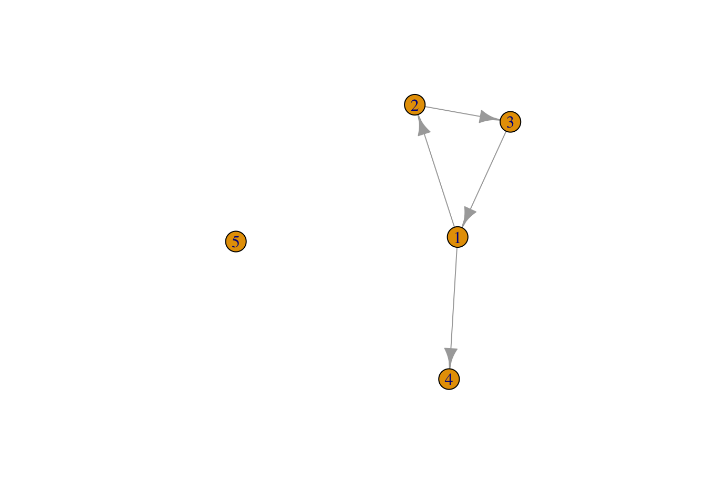
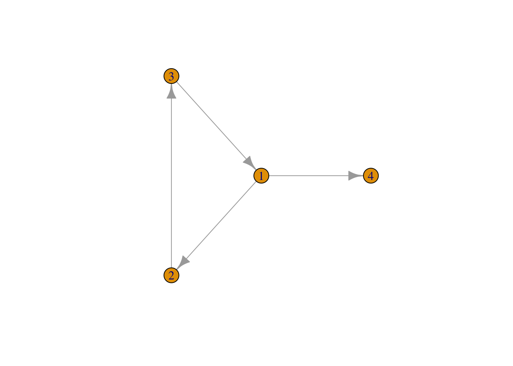
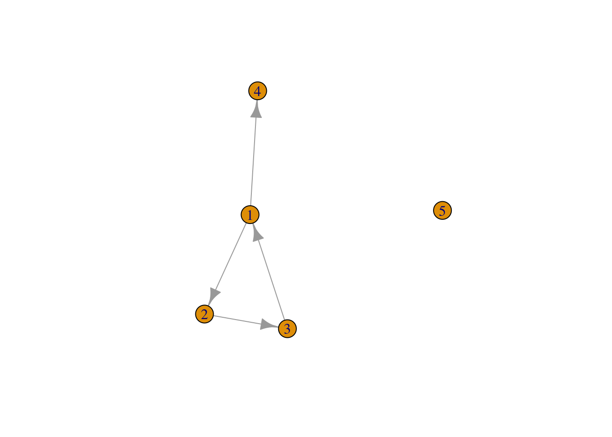
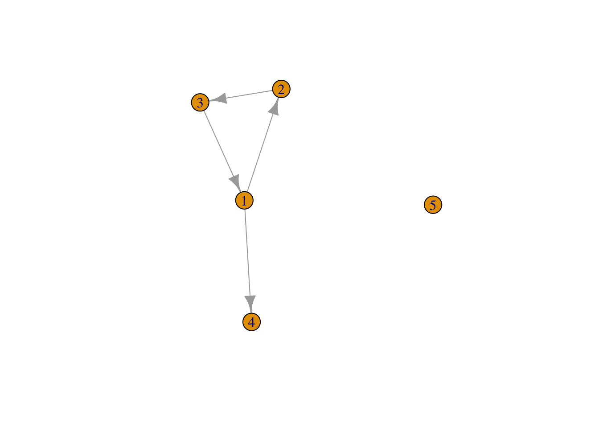
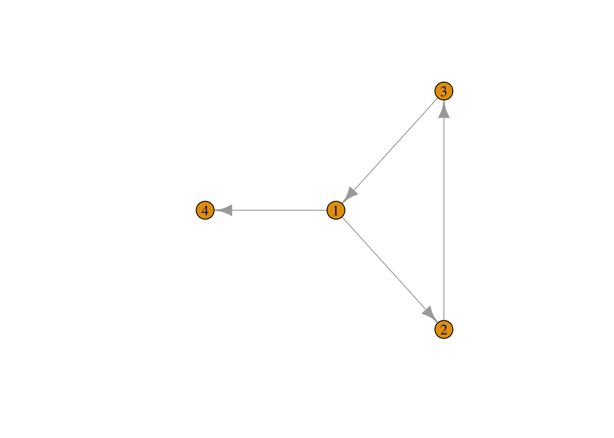
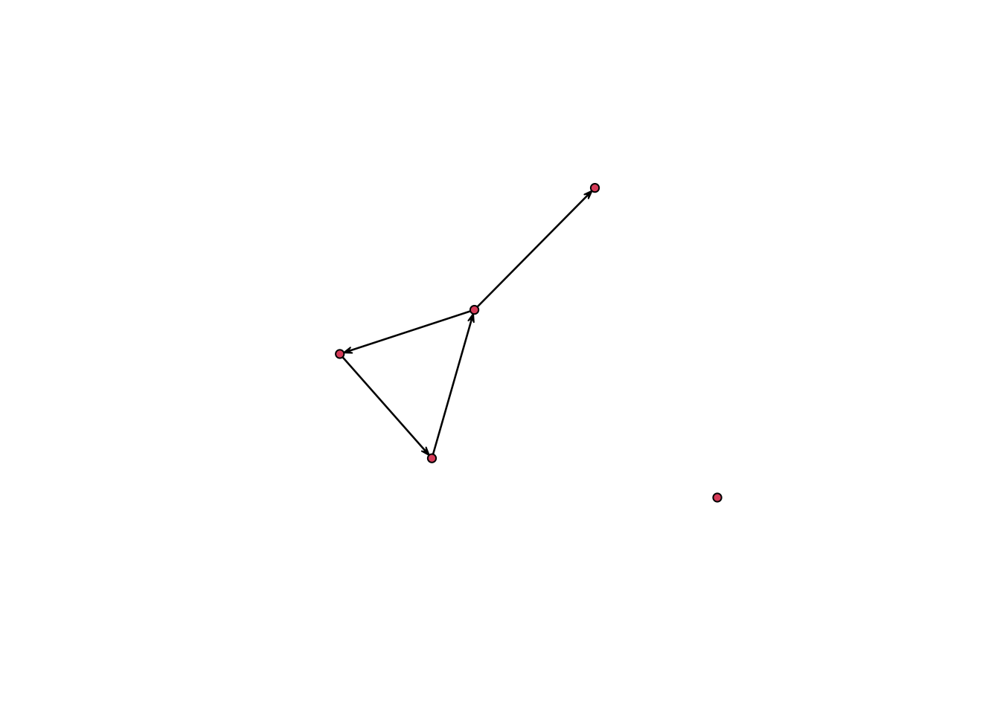
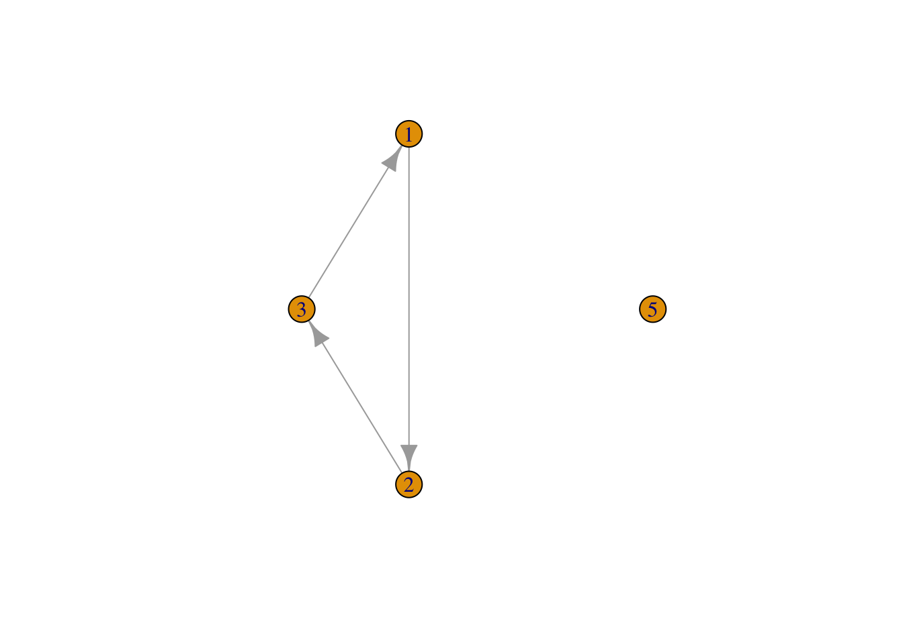
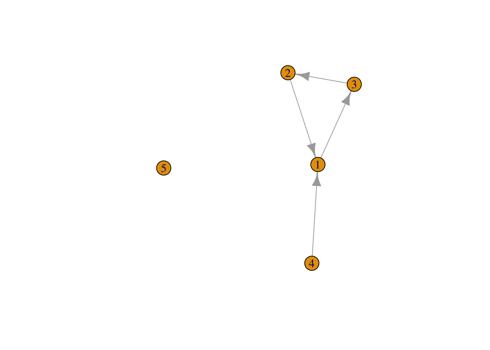
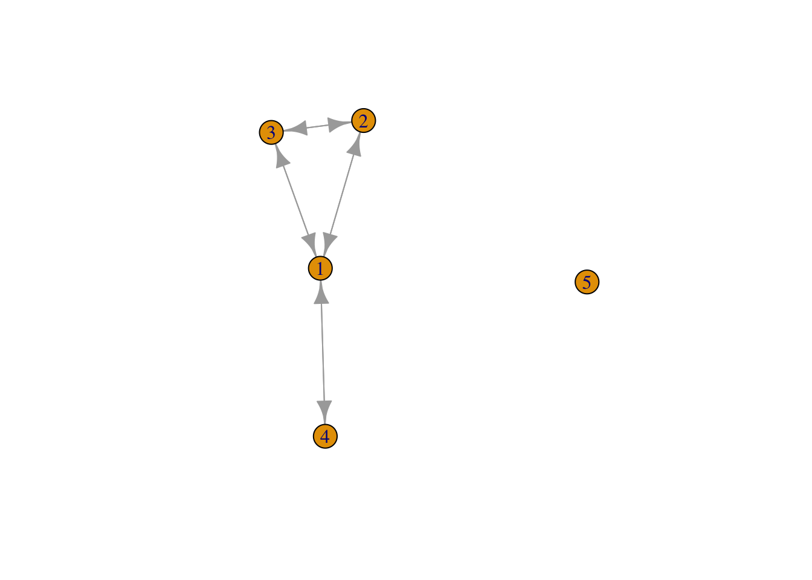
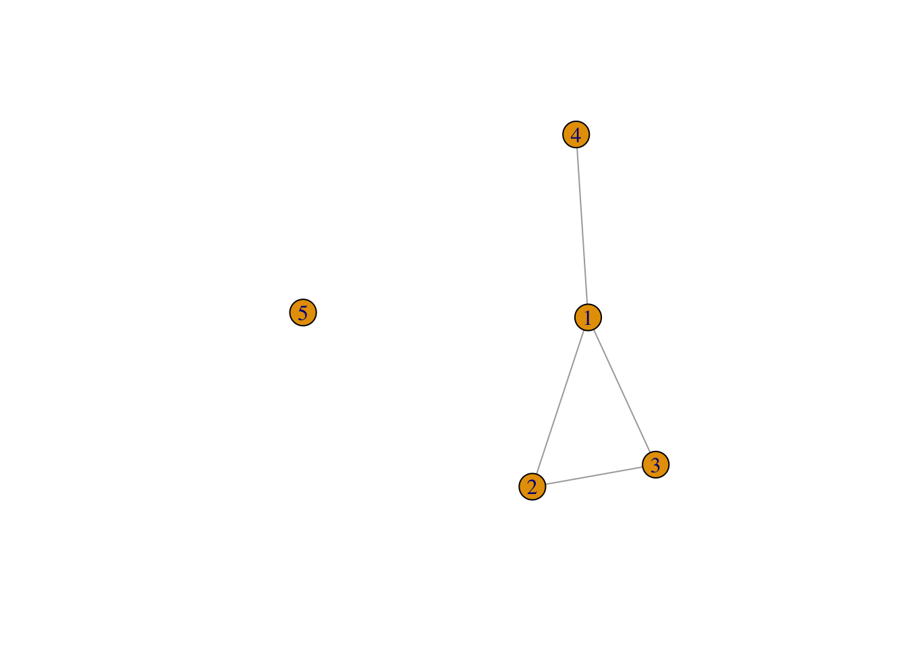

Tutorial 1
Jakub Janusz
2026-04-29
1 1 Handling social network data in R
Loading packages
#install.packages("network")
#install.packages("igraph")
#install.packages("reshape2")
#install.packages("tidyverse")
library(network)##
## 'network' 1.20.0 (2026-02-06), part of the Statnet Project
## * 'news(package="network")' for changes since last version
## * 'citation("network")' for citation information
## * 'https://statnet.org' for help, support, and other informationlibrary(igraph)##
## Attaching package: 'igraph'## The following objects are masked from 'package:network':
##
## %c%, %s%, add.edges, add.vertices, delete.edges, delete.vertices,
## get.edge.attribute, get.edges, get.vertex.attribute, is.bipartite,
## is.directed, list.edge.attributes, list.vertex.attributes,
## set.edge.attribute, set.vertex.attribute## The following objects are masked from 'package:stats':
##
## decompose, spectrum## The following object is masked from 'package:base':
##
## unionlibrary(reshape2)
library(tidyverse)## ── Attaching core tidyverse packages ──────────────────────── tidyverse 2.0.0 ──
## ✔ dplyr 1.2.0 ✔ readr 2.1.6
## ✔ forcats 1.0.1 ✔ stringr 1.6.0
## ✔ ggplot2 4.0.2 ✔ tibble 3.3.1
## ✔ lubridate 1.9.5 ✔ tidyr 1.3.2
## ✔ purrr 1.2.1## ── Conflicts ────────────────────────────────────────── tidyverse_conflicts() ──
## ✖ lubridate::%--%() masks igraph::%--%()
## ✖ dplyr::as_data_frame() masks tibble::as_data_frame(), igraph::as_data_frame()
## ✖ purrr::compose() masks igraph::compose()
## ✖ tidyr::crossing() masks igraph::crossing()
## ✖ dplyr::filter() masks stats::filter()
## ✖ dplyr::lag() masks stats::lag()
## ✖ purrr::simplify() masks igraph::simplify()
## ℹ Use the conflicted package (<http://conflicted.r-lib.org/>) to force all conflicts to become errors1.1 1.1 Getting network data into R: the igraph package
1.1.1 1.1.1 From adjacency matrix to igraph object
Reading data from internet
url1 <- "https://github.com/rensec/sasr08/raw/main/g_adj_matrix_simple.csv"
g_matrix <- read.csv(file = url1, header = FALSE)
g_matrix## V1 V2 V3 V4 V5
## 1 0 1 0 1 0
## 2 0 0 1 0 0
## 3 1 0 0 0 0
## 4 0 0 0 0 0
## 5 0 0 0 0 0^ adjacency matrix - square matrix in which both the rows and the columns represent nodes, and the values in the cells indicate the status of the edges between these nodes
class(g_matrix)## [1] "data.frame"Transformation into matrix object
g_matrix <- as.matrix(g_matrix)
g_matrix## V1 V2 V3 V4 V5
## [1,] 0 1 0 1 0
## [2,] 0 0 1 0 0
## [3,] 1 0 0 0 0
## [4,] 0 0 0 0 0
## [5,] 0 0 0 0 0^matrix object - the data still have the shape of an adjacency matrix, but in R, it is now stored as an object of class ‘matrix’
Adding row- and column names for claritry (by simply numbering them):
rownames(g_matrix) <- 1:nrow(g_matrix)
colnames(g_matrix) <- 1:ncol(g_matrix)
g_matrix## 1 2 3 4 5
## 1 0 1 0 1 0
## 2 0 0 1 0 0
## 3 1 0 0 0 0
## 4 0 0 0 0 0
## 5 0 0 0 0 0QUESTION: How many nodes are included in this matrix, and how many edges are there between these nodes?
5 nodes and 4 edges between them
Reading an attribute of the nodes:
g_nodes_age <- read.csv(file = "https://github.com/rensec/sasr08/raw/main/g_nodes_age.csv")
g_nodes_age## id age
## 1 1 20
## 2 2 21
## 3 3 25
## 4 4 NA
## 5 5 21Creating an igraph network object from our matrix
g <- graph_from_adjacency_matrix(g_matrix)
class(g)## [1] "igraph"g## IGRAPH b6b22d3 DN-- 5 4 --
## + attr: name (v/c)
## + edges from b6b22d3 (vertex names):
## [1] 1->2 1->4 2->3 3->1Creating network map
plot(g)
Adding node attributes to the object
g <- set_vertex_attr(g,
name = "age",
value = g_nodes_age$age)1.1.2 1.1.2 From edge list to igraph object
Loading the file with edge list into a data frame:
g_elist <- read.csv(file = "https://github.com/rensec/sasr08/raw/main/g_elist.csv")
g_elist## from to
## 1 1 2
## 2 2 3
## 3 3 1
## 4 1 4Creating an igraph network object from the edge
list:
g_from_elist <- graph_from_data_frame(g_elist)
plot(g_from_elist)
^ Isolate (mr 5) lost :(((
Now we want to include isolante in the network object
g_from_elist <- graph_from_data_frame(g_elist, vertices = g_nodes_age)
plot(g_from_elist)
! it is important to always include a complete node list as well (unless you are certain that the edge list includes all nodes)!
Assignment: from the code snippets above, construct
a complete “pipeline” to go from the edge list to the igraph object.
Start from g_elist. Plot the resulting network. Store the
code somewhere for later use.
g_elist <- read.csv(file = "https://github.com/rensec/sasr08/raw/main/g_elist.csv")
g_from_elist <- graph_from_data_frame(g_elist, vertices = g_nodes_age)
plot(g_from_elist)
1.1.3 1.1.3 From adjacency list to igraph object
Adjacency list
g_adj_list <- read.csv(file = "https://github.com/rensec/sasr08/raw/main/g_adj_list.csv")
g_adj_list## id age friend1 friend2
## 1 1 20 2 4
## 2 2 21 3 NA
## 3 3 25 1 NA
## 4 4 NA NA NA
## 5 5 21 NA NAThe most convenient way to create a network object from these data, is to first transform them into an edge list
Making data long
g_elist_from_alist <- g_adj_list
g_elist_from_alist <- select(g_elist_from_alist, id, friend1:friend2) # keep only the network variables (and id)
g_elist_from_alist <- melt(g_elist_from_alist, id.vars = "id") # from the reshape2 package
g_elist_from_alist## id variable value
## 1 1 friend1 2
## 2 2 friend1 3
## 3 3 friend1 1
## 4 4 friend1 NA
## 5 5 friend1 NA
## 6 1 friend2 4
## 7 2 friend2 NA
## 8 3 friend2 NA
## 9 4 friend2 NA
## 10 5 friend2 NAUsing pipe operator to streamline the code
g_elist_from_alist <- g_adj_list %>%
select(id, friend1:friend2) %>% # keep only the network variables (and id)
melt( id.vars = "id") # from the reshape2 packageSame thing using tidyverse
g_adj_list %>% # (we don't save it into an object as above this time, since we just want to show that the result is the same)
select(id, friend1:friend2) %>% #keep only the network variables (and id)
pivot_longer(c(friend1, friend2))## # A tibble: 10 × 3
## id name value
## <int> <chr> <int>
## 1 1 friend1 2
## 2 1 friend2 4
## 3 2 friend1 3
## 4 2 friend2 NA
## 5 3 friend1 1
## 6 3 friend2 NA
## 7 4 friend1 NA
## 8 4 friend2 NA
## 9 5 friend1 NA
## 10 5 friend2 NATo create an edge list we subsequently drop all missing values on “value” and do some housekeeping:
g_elist_from_alist <- g_elist_from_alist%>%
filter(!is.na(value)) %>% # drop the missings
rename(from ="id", to = "value", sourcevar= "variable") %>% #just nice for interpretation
relocate(to, .after=from) #move around the columns
g_elist_from_alist## from to sourcevar
## 1 1 2 friend1
## 2 2 3 friend1
## 3 3 1 friend1
## 4 1 4 friend2QUESTION: Besides being useful for data manipulation
procedures, keeping the information in sourcevar could also
be important for more substantive reasons. Can you think of such a
reason?
For when we want to account for the strength of relationships? friend 1 might indicate best friend = stronger tie.
now importing into network object
g_from_alist <- graph_from_data_frame(g_elist_from_alist) #This is a proper igraph graph object
plot(g_from_alist)
correction to include isolate (+creating adjacency list)
nodelist <- select(g_adj_list,id,age)
g_from_alist <- graph_from_data_frame(g_elist_from_alist, vertices = nodelist) #This is a proper igraph graph object
plot(g_from_alist)1.2 1.2 The reverse direction: exporting from igraph objects
1.2.1 1.2.1 From igraph to adjacency matrix
g_adj_matrix <- as_adjacency_matrix(g, sparse = FALSE)
g_adj_matrix## 1 2 3 4 5
## 1 0 1 0 1 0
## 2 0 0 1 0 0
## 3 1 0 0 0 0
## 4 0 0 0 0 0
## 5 0 0 0 0 01.2.2 1.2.2 From igraph to edge list
g_edgelist <- igraph::as_data_frame(g_from_elist, what = "edges")
g_edgelist## from to
## 1 1 2
## 2 2 3
## 3 3 1
## 4 1 4the number 5 again…
igraph::as_data_frame(g_from_elist, what = "vertices") ## name age
## 1 1 20
## 2 2 21
## 3 3 25
## 4 4 NA
## 5 5 211.2.3 1.2.3 From igraph to adjacency list
edgelist_2 <- igraph::as_data_frame(g_from_alist, what = "edges")
nodelist_2 <- igraph::as_data_frame(g_from_alist, what = "vertices")
# Note the use of the "namespace" "igraph::" here, to indicate that we need the igraph function here, not the function with the same name from the dplyr/tidyverse package
d <- edgelist_2 %>%
rename(id = "from") %>%
pivot_wider( id_cols = id, names_from = sourcevar, values_from = to ) %>%
merge(nodelist_2, by.x = "id", by.y = "name", all.y = TRUE ) %>%
relocate(age, .after = id) %>%
type_convert() #as_data_frame returns characters; this transforms it back to numeric##
## ── Column specification ────────────────────────────────────────────────────────
## cols(
## id = col_double(),
## friend1 = col_double(),
## friend2 = col_double()
## )d## id age friend1 friend2
## 1 1 20 2 4
## 2 2 21 3 NA
## 3 3 25 1 NA
## 4 4 NA NA NA
## 5 5 21 NA NA1.3 1.3 Getting network data into R: the network package
g_np <- as.network(g_elist_from_alist, matrix.type = "edgelist", vertices = nodelist)
g_np## Network attributes:
## vertices = 5
## directed = TRUE
## hyper = FALSE
## loops = FALSE
## multiple = FALSE
## bipartite = FALSE
## total edges= 4
## missing edges= 0
## non-missing edges= 4
##
## Vertex attribute names:
## age vertex.names
##
## Edge attribute names:
## sourcevarplot(g_np)
1.4 1.4 Modifying networks in igraph
Removing a node :((
g_mod <- delete_vertices(g,2)
plot(g_mod)
Eliminating 21 year olds
g_mod <- delete_vertices(g,which(V(g)$age == 21))
plot(g_mod)
Eliminating missing age
g_mod <- delete_vertices(g,which(is.na(V(g)$age)))
plot(g_mod)
Adding node attributes
V(g)$gender <- c("male", "female", "female", "other", "male")
g## IGRAPH b6b22d3 DN-- 5 4 --
## + attr: name (v/c), age (v/n), gender (v/c)
## + edges from b6b22d3 (vertex names):
## [1] 1->2 1->4 2->3 3->1Functions that modify the entire graph
g_rev <- reverse_edges(g)
plot(g_rev)
combining edges of two graphs
g_union <- igraph::union(g, g_rev)
plot(g_union)
g_undir <- as_undirected(g)
plot(g_undir)
QUESTION: What’s the difference?
in one we see that there are edges in two directions and in the second one we just can see that there are edges